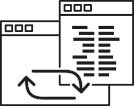
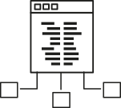

We are curious about your
ideas and business needs
We provide services in the field of custom software and digital transformation of existing business tools, system integration as well as comprehensive software quality assurance and implementation of DevOPs support.
Security Integration
Well-designed IT solutions – innovative, holistic, and first and foremost perfectly suited to the specifics of the company – today they are foundation for efficient and effective competition on the market.
We can create it for you.
The starting point for the preparation of the project is an in-depth and reliable analysis of the specifics, needs and forecasts of the company’s development. We know how to identify needs, identify weaknesses and estimate the investment risk. An important role in this process is played by end users and their expectations.
Designing involves defining the necessary tools (data structures, information resources, data processing algorithms, etc.) and planning their operation to meet the previously defined requirements. This is a central, conceptual work on the system.
The result is a prototype – our proposal for the best solution to the problem. Together, we go over the prototype and apply the necessary changes. This becomes the foundation for the implementation of the system.

Application service
The entry point for the implementation work is a properly-constructed system project. It determines the necessary tools, functionalities and the order of realization of the individual elements. However, even the best project would be worth nothing without a good and experienced implementation team.
We have such.
The team designated for implementation consists of:
– programmers specialized in various technologies, in whose hands rests the creation of all software in accordance with the specifications,
– testers, whose task is compliance verification.
– and a project manager who organizes the work of the entire team and is in constant contact with the client.
The entire implementation process of dedicated IT systems is divided into stages, in accordance with a detailed schedule. The implementation of each of them takes place with the optimal use of time, a team of experts and financial resources. We make sure that we do not exceed the assumed amounts and dates.
We place special emphasis on everything in agreement with the client. We set all current modifications together so that the effect is consistent with its expectations and needs.
This stage of the system life cycle ends with its launch, and further verification of its operation and adaptation to the changing needs of business and users.
Cloud and on-premise Infrastructure
Software testing takes place at all stages of its life: starting from the stage of submitting requirements, early versions of the documentation, until the final product is implemented. It is necessary especially during the implementation process, if in effect a compatible system is to be created with requirements and above all functional. Equally important it is its verification after starting.
By testing, we don’t only find errors, but also suggest improvements.
The basis for performing this service is a precisely prepared system specification. It should accurately determine the expected action and thus allow the creation of test scenarios that will be used to carry out the tests.
The testing process is primarily based on manual tests. They make it possible to get acquainted with the system and verify the functionality and usability of the system from the perspective of both the specialist and the user. The creativity and detail of the tester is irreplaceable here.
In certain scenarios, automated tests are also used, e.g. to test the performance of a system in the face of a load or when it is necessary to repeat certain activities repeatedly. Then, a qualified tester prepares scripts and programs that, after running, will perform the task assigned to them.
As a result, the client receives a report indicating errors of various severity that should be repaired, as well as recommended improvements, so that the system better fulfills the functions assigned to it.

PCIDSS AND ISO Advisory services
Outsourcing in IT relies on the use of resources and services of an external IT company which is entrusted with taking care of the selected aspects of the company’s operation. Thanks to the effective task realization, the organization can focus on its activities and potentially reduce costs.
Gain peace of mind and entrust IT service to us.
The service we provide may include both full service and only selected items or processes for which the company needs support. We offer maintenance and development of IT systems, from infrastructure (computer hardware, server rooms, telecommunications), operating systems and databases, to application layer software and consulting services.
We also practice employee outsourcing. We work with professionals proficient in individual technologies who are ready to join the client team for a certain time period. They are specialists who are experienced with the business aspect of the industry and by joining the organization, bring the knowledge and experience that would not be easy to acquire otherwise.
When choosing our company, customers gain the flexibility from a wide range of the services we offer, as well as the certainty and security due to our experience that the IT section of their company will operate without any complaints.
VAPT | ASV
Outsourcing in IT relies on the use of resources and services of an external IT company which is entrusted with taking care of the selected aspects of the company’s operation. Thanks to the effective task realization, the organization can focus on its activities and potentially reduce costs.
Gain peace of mind and entrust IT service to us.
The service we provide may include both full service and only selected items or processes for which the company needs support. We offer maintenance and development of IT systems, from infrastructure (computer hardware, server rooms, telecommunications), operating systems and databases, to application layer software and consulting services.
We also practice employee outsourcing. We work with professionals proficient in individual technologies who are ready to join the client team for a certain time period. They are specialists who are experienced with the business aspect of the industry and by joining the organization, bring the knowledge and experience that would not be easy to acquire otherwise.
When choosing our company, customers gain the flexibility from a wide range of the services we offer, as well as the certainty and security due to our experience that the IT section of their company will operate without any complaints.
Automation
Outsourcing in IT relies on the use of resources and services of an external IT company which is entrusted with taking care of the selected aspects of the company’s operation. Thanks to the effective task realization, the organization can focus on its activities and potentially reduce costs.
Gain peace of mind and entrust IT service to us.
The service we provide may include both full service and only selected items or processes for which the company needs support. We offer maintenance and development of IT systems, from infrastructure (computer hardware, server rooms, telecommunications), operating systems and databases, to application layer software and consulting services.
We also practice employee outsourcing. We work with professionals proficient in individual technologies who are ready to join the client team for a certain time period. They are specialists who are experienced with the business aspect of the industry and by joining the organization, bring the knowledge and experience that would not be easy to acquire otherwise.
When choosing our company, customers gain the flexibility from a wide range of the services we offer, as well as the certainty and security due to our experience that the IT section of their company will operate without any complaints.
IT Outsourcing
An IT system is a collection of related elements. suitably administering them is a guarantee not only of continuity and efficiency of their operation, but also broadly understood IT security. In order to do this, a stable company is needed, whose experience and knowledge stays in the company.
We are the right choice.
Our role in the field:
– supervising the work of entrusted systems,
– installing and updating software,
– care for the system security and data,
– user accounts and permission management,
– network configuration,
– supervision, detection and elimination of irregularities,
– documenting changes,
and many other activities related to the maintenance of IT systems.
By entrusting us with administering your system, you can be sure that knowledge about it will not leave the company, thanks to which not only the work of the system, but also our cooperation will be smooth and unwavering. You can count on our support.
Is your organization at the turning point?
You need design, implementation, care,
or maybe a comprehensive service?
You need design, implementation, care,
or maybe a comprehensive service?
We are here to help you meet your needs
Your organization in every dimension.
Your organization in every dimension.